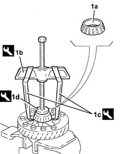
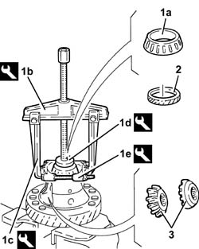
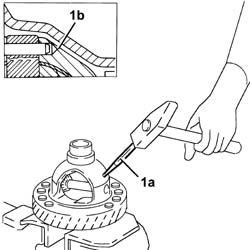
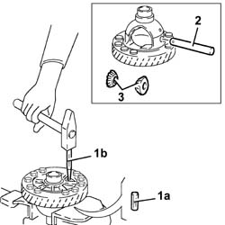
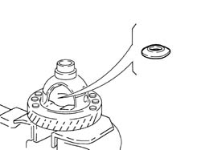
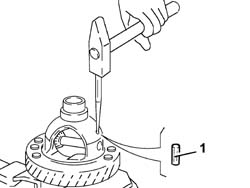
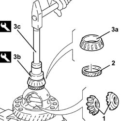
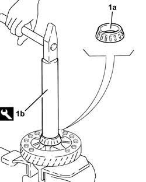

2110D20 differential inner case, removed - dismantle and rebuild, check planet and differential gears
- Path
- Procedures > 21 GEARBOX UNIT > 2110 MANUAL GEARBOX WITH DIFFERENTIAL > 2110D manual gearbox differential > 2110D20 differential inner case, removed - dismantle and rebuild, check planet and differential gears
- Kind
- repair procedure (removal / refitting; the operation number is the code)
- Applies to
- all engines; all production periods
- Interactive page
- https://sloeber94.github.io/elrnDB-fPnd/en/#/2753397
Applies to: all engines; all production periods
 Dismantling
Dismantling
 Reassembling
ReassemblingPosition the complete differential in a vice with protective jaws.
1. Remove the bearing (1a) with a suitable puller (1b) with jaws (1c) and a reaction base (1d).
 | Name | Country |
|---|---|---|
1b | Extractor | 1.840.005.001 |
| Name | Country |
|---|---|---|
1b | Extractor Arms | 1.840.005.302 |
| Name | Country |
|---|---|---|
1b | Pad | 1.845.028.000 |

Applies to: all engines; all production periods
1. Remove the bearing (1a) with the tools (1b), (1c), (1d) and (1e).
| Name | Country |
|---|---|---|
1b | Extractor | 1.840.005.001 |
| Name | Country |
|---|---|---|
1b | Extractor Arms | 1.840.005.302 |
| Name | Country |
|---|---|---|
1b | Pad | 1.845.028.000 |
| Name | Country |
|---|---|---|
1b | Extractor | 1.842.133.000 |
2. Remove the speedometer drivegear.
3. Remove the planet gears.

Applies to: all engines; all production periods
1. Using a suitable chisel (1a), break open the wall of the differential casing at point (1b) to that the flexible pin which retains the differential satellite gear carrier can be removed.

Applies to: all engines; all production periods
1. Remove the differential satellite gear carrier flexible retaining pin (1a) using a suitable punch (1b).
2. Remove the differential satellite gear carrier.
3. Remove the satellite gears.

Applies to: all engines; all production periods
1. Remove the satellite and planet gear metal thrust washers.

Applies to: all engines; all production periods
Reassembling
DismantlingCheck that the satellite and planet gears are intact and that there are no signs of seizing.
Fit the satellite and planet gear metal thrust washers.
Fit the differential satellite carrier and the satellite gears.
1. Fit the flexible pin securing the differential satellite carrier using a suitable punch.
After fitting the flexible pin, stake the differential casing to prevent it coming out.

Applies to: all engines; all production periods
1. Place the planet gears on the satellite gears and, by rotating them on the satellites, fit them in their seatings in the casing.
2. Fit the speedometer drivegear.
3. Fit the bearing (3a) with the tools (3b) and (3c).
| Name | Country |
|---|---|---|
3b | Fitting tool | 1.870.469.000 |
| Name | Country |
|---|---|---|
3c | Grip | 1.870.007.000 |

Applies to: all engines; all production periods
1. Fit the bearing (1a) with the tool (1b).
| Name | Country |
|---|---|---|
1b | Fitting tool | 1.870.632.000 |
